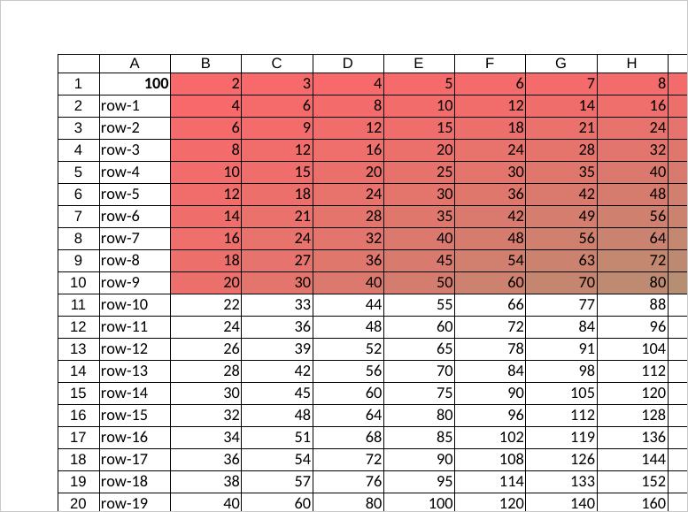

Phone checklist · pack at 4aee651 · 10 Office files saved through packed @nitro-xml/react
How to check on your phone
Tap Open Saved for a case. The file is a real .docx, .xlsx, or .pptx in your Google Drive (not converted to a Google Doc).
In Drive, tap the share / overflow menu and choose Word, Excel, or PowerPoint — not Google Docs, Sheets, or Slides.
Confirm it opens without a repair prompt, and that the edit described below looks right. Surrounding text, formatting, images, tables, and sheet or slide order should be unchanged except for that edit.
Known item (case 5).xlsx-insert-row-formula rewrites xl/workbook.xml: it adds a recalc flag (fullCalcOnLoad) and a fileVersion element, tracked as E2 #509. The formula and inserted row should still be correct when Excel opens the file.
The before/after images are LibreOffice headless previews of the first relevant page or slide, not Microsoft Office. Use them to find the edit. The official check is opening the Saved file in the Office app.
Word 1. Text and format
Edit: Replace the first paragraph with “Formatted”, make that run bold and blue (#0000FF), and center the paragraph.
Look for: Line 1 reads Formatted, bold, blue, and centered. Line 2 still says “Line two”, left-aligned, not bold. Line numbers 1 and 2 remain. No repair prompt.
Original · LibreOffice preview, page 1 — not OfficeSaved · LibreOffice preview, page 1 — not Office
Word 2. Text plus table cell
Edit: Change the first paragraph of this 10-page document to “Intro”, and set the table cell at row 0, column 0 (on page 10) to “ZZ”.
Look for: Page 1 starts with “Intro” instead of “Page 1 seed=4”. On page 10, the first table cell is “ZZ” (it was “A”); cell “B” and the blue square are unchanged. Pages 2–9 stay “Page N seed=4”.
Original · LibreOffice preview, page 1 — not OfficeSaved · LibreOffice preview, page 1 — not Office
Page 10 — table
Original · LibreOffice preview, page 10 — not OfficeSaved · LibreOffice preview, page 10 — not Office
Word 3. Insert table row
Edit: Insert a row in the page-10 table at position 1, then set that new row’s first cell to “R1”.
Look for: Page 1 is unchanged (“Page 1 seed=4”). On page 10 the table still has “A” and “B” in the first row, plus a new second row whose first cell is “R1”. The blue square is still there. No repair prompt.
Original · LibreOffice preview, top of sheet — not OfficeSaved · LibreOffice preview, top of sheet — not Office
Excel 5. Insert row + formula
Edit: Set B1 to the formula =A1, then insert one row at the top so that formula moves down and becomes =A2.
Look for: Row 1 is empty. A2 is “row-0”. B2’s formula is =A2 (check the formula bar). After Excel calculates, B2’s value should be “row-0”. C2 is still 3. The old first row of data has shifted down one.
Known item. This save rewrites xl/workbook.xml (recalc flag fullCalcOnLoad, plus fileVersion, tracked as #509). That’s expected. The file should still open and the formula should be correct.
Original · LibreOffice preview, top of sheet — not OfficeSaved · LibreOffice preview, top of sheet — not Office

PowerPoint 7. Text and style
Edit: Change the first shape on slide 1 to the text “Styled”, then set that text bold at 28 pt.
Look for: Slide 1 shows Styled in a larger bold font. The original shape is a tall, narrow box, so LibreOffice may stack the letters vertically — in PowerPoint, confirm the text, bold, and 28 pt size. Slides 2–10 still say “Slide 2” through “Slide 10”.
Original · LibreOffice preview, slide 1 — not OfficeSaved · LibreOffice preview, slide 1 — not Office
PowerPoint 8. Move and resize
Edit: Move and resize the first shape on slide 1 to x=40, y=60, width=280, height=90.
Look for: Slide 1 still says “Slide 1”, but the text box is wider and shorter, so the words read on one line instead of stacking. The box has moved in from the corner. Other slides are unchanged.
Original · LibreOffice preview, slide 1 — not OfficeSaved · LibreOffice preview, slide 1 — not Office
PowerPoint 9. Reorder slides
Edit: Move the first slide to the end of the thumbnail rail (from index 0 to 9).
Look for: The deck still has 10 slides. The first slide is now “Slide 2”. The last slide is the original “Slide 1”. Thumbnails should follow 2, 3, … 10, then 1.
Original first slide · LibreOffice preview — not OfficeSaved first slide · LibreOffice preview — not Office
Last slide
Original last slide · LibreOffice preview — not OfficeSaved last slide · LibreOffice preview — not Office
Excel 10. Undo then redo
Edit: Set B1 to “hello”, undo that change, then redo it. After save and reopen, B1 must still contain the replacement.
Look for: B1 is hello (the redo stuck). A1 is still “row-0”. C1 is still 3. Same visual result as case 4, but this file went through undo and redo before save.